Spherical Elevation
Adjusting Arbitrary Normals
- Modify sphere radius with noise.
- Create analytical normals for a deformed sphere.
- Calculate normals without using tangents.
This is the fifth tutorial in a series about pseudorandom surfaces. In it we will add support for deformed spherical surfaces, using noise to adjust the sphere radius.
This tutorial is made with Unity 2020.3.38f1.
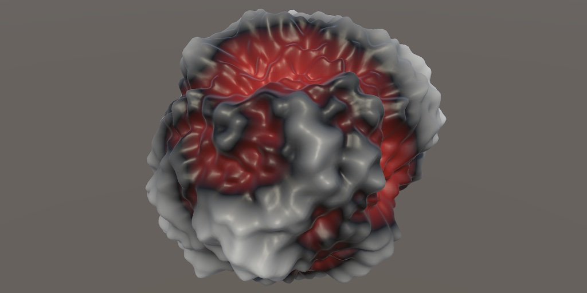
Sphere Radius
Up to this point we've always worked with flat planes. If we were to select a sphere mesh type then it would get flattened and become a disk due to the way we adjust the positions. And if we apply 3D noise then we'd get a self-intersecting surface.
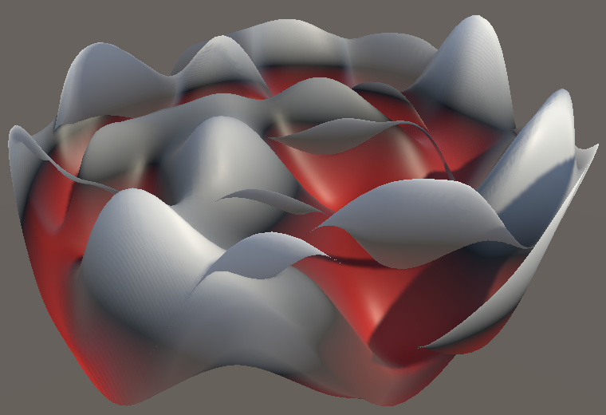
To also support spheres we have to use a separate approach for them. For a plane we adjust elevation. The analogue for a sphere would be to scale its radius.
Plane or Sphere
We won't create separate jobs for planes and spheres, because that would double the amount of jobs. Instead we'll use the same jobs for both, introducing a branch when setting the vertices. To keep this clean we'll keep both approaches in separate methods, passing them the vertices and the noise.
But first, to pass along properly transformed derivatives let's also make it possible to assign directly to the Sample4.Derivatives property.
public float4x3 Derivatives {
get => float4x3(dx, dy, dz);
set {
dx = value.c0;
dy = value.c1;
dz = value.c2;
}
}
Then we can refactor SurfaceJob.Execute so it passes the vertices and adjusted noise to a new SetPlaneVertices method that performs all the plane-related work and returns the adjusted vertices, which are then stored.
public void Execute (int i) {
Vertex4 v = vertices[i];
Sample4 noise = GetFractalNoise<N>(
domainTRS.TransformVectors(transpose(float3x4(
v.v0.position, v.v1.position, v.v2.position, v.v3.position
))),
settings
) * displacement;
noise.Derivatives = derivativeMatrix.TransformVectors(noise.Derivatives);
vertices[i] = SetPlaneVertices(v, noise);
}
Vertex4 SetPlaneVertices (Vertex4 v, Sample4 noise) {
v.v0.position.y = noise.v.x;
v.v1.position.y = noise.v.y;
v.v2.position.y = noise.v.z;
v.v3.position.y = noise.v.w;
//float4x3 dNoise =
// derivativeMatrix.TransformVectors(noise.Derivatives);
float4 normalizer = rsqrt(noise.dx * noise.dx + 1f);
float4 tangentY = noise.dx * normalizer;
v.v0.tangent = float4(normalizer.x, tangentY.x, 0f, -1f);
v.v1.tangent = float4(normalizer.y, tangentY.y, 0f, -1f);
v.v2.tangent = float4(normalizer.z, tangentY.z, 0f, -1f);
v.v3.tangent = float4(normalizer.w, tangentY.w, 0f, -1f);
normalizer = rsqrt(noise.dx * noise.dx + noise.dz * noise.dz + 1f);
float4 normalX = -noise.dx * normalizer;
float4 normalZ = -noise.dz * normalizer;
v.v0.normal = float3(normalX.x, normalizer.x, normalZ.x);
v.v1.normal = float3(normalX.y, normalizer.y, normalZ.y);
v.v2.normal = float3(normalX.z, normalizer.z, normalZ.z);
v.v3.normal = float3(normalX.w, normalizer.w, normalZ.w);
return v;
}
To also support spheres we introduce a SetSphereVertices method that works in the same way, except that it initially returns the original unmodified vertices.
Vertex4 SetSphereVertices (Vertex4 v, Sample4 noise) {
return v;
}
To control which method the job invokes we give it a bool isPlane field. Use it to invoke the appropriate method in Execute via an if-else statement. Note that this is a branch that changes what code gets executed for all four vertices, not a vectorized selection nor a conditional assignment.
bool isPlane;
public void Execute (int i) {
…
if (isPlane) {
vertices[i] = SetPlaneVertices(v, noise);
}
else {
vertices[i] = SetSphereVertices(v, noise);
}
}
Add a parameter to SceduleParallel to set isPlane.
public static JobHandle ScheduleParallel (
Mesh.MeshData meshData, int resolution, Settings settings, SpaceTRS domain,
float displacement, bool isPlane,
JobHandle dependency
) => new SurfaceJob<N>() {
vertices =
meshData.GetVertexData<SingleStream.Stream0>().Reinterpret<Vertex4>(12 * 4),
settings = settings,
domainTRS = domain.Matrix,
derivativeMatrix = domain.DerivativeMatrix,
displacement = displacement,
isPlane = isPlane
}.ScheduleParallel(meshData.vertexCount / 4, resolution, dependency);
And add it to its delegate type as well.
public delegate JobHandle SurfaceJobScheduleDelegate ( Mesh.MeshData meshData, int resolution, Settings settings, SpaceTRS domain, float displacement, bool isPlane, JobHandle dependency );
Now we can indicate whether we're working on a plane or a sphere when scheduling the job in ProceduralSurface.GenerateMesh. All mesh types before the cube sphere are planes.
surfaceJobs[(int)noiseType, dimensions - 1]( meshData, resolution, noiseSettings, domain, displacement, meshType < MeshType.CubeSphere, meshJobs[(int)meshType](…) ).Complete();
Also, as the surface of the sphere will get displaced in all directions we should make the bounds grown in all three dimensions. This isn't needed for planes, but we can use the same adjustment for all cases, simply overestimating the bounds for planes.
meshJobs[(int)meshType]( mesh, meshData, resolution, default, Vector3.one * Mathf.Abs(displacement), true )
Displacing Sphere Surface
In case of a plane we apply noise by adjusting its vertical position, effectively displacing it along its normal vector, which always points up. As we work with unit spheres their normal vectors are equal to their vertex positions. So we can create a spherical displacement by using the noise to scale the sphere positions. Use the results as the modified positions in SurfaceJob.SetSphereVertices.
Vertex4 SetSphereVertices (Vertex4 v, Sample4 noise) {
v.v0.position *= noise.v.x;
v.v1.position *= noise.v.y;
v.v2.position *= noise.v.z;
v.v3.position *= noise.v.w;
return v;
}
That would make the surface oscillate around the center of the sphere. To displace its original surface add the sphere radius—which is 1—to the noise value before scaling the positions.
noise.v += 1f; v.v0.position *= noise.v.x;
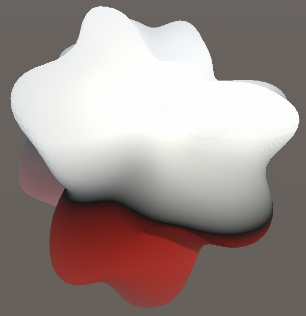
Note that we could also change to a different radius, which could be made configurable as well, but we keep the original radius.
Displacement Material
The material that we use to color the surface based on its displacement also has to be adjusted to produce sensible results for spheres. We do this by giving it a boolean property to indicate whether it's shading a plane or not.
Open the Displacement shader graph and add a boolean property to its blackboard. Use the graph inspector to make sure that its reference name is _IsPlane.
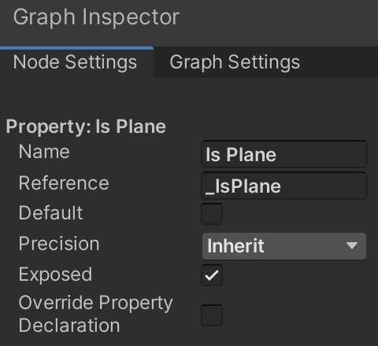
Then introduce a Branch node that uses the new property to select either the Y component of the object-space position for a plane, or the position's length minus 1 for a sphere.
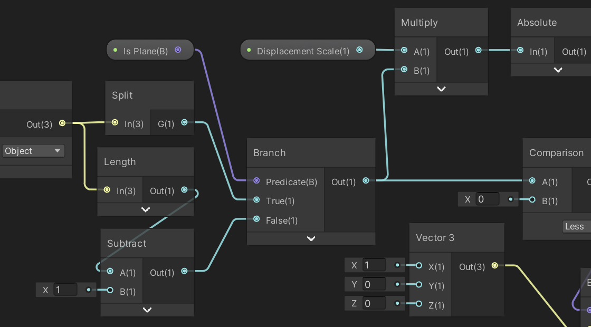
Now ProceduralSurface has to correctly configure the Displacement material. First, have it keep track of the shader property identifier.
static int materialIsPlaneId = Shader.PropertyToID("_IsPlane");
Second, replace the displacement material with a duplicate of itself in OnAwake. We do this so we won't adjust the material asset itself while in play mode.
void Awake () {
…
materials[(int)displacement] = new Material(materials[(int)displacement]);
}
Finally, before assigning the material to the MeshRenderer in Update check whether the displacement material is selected. If so, use SetFloat to configure the property, because a boolean shader property uses the float data type.
void Update () {
…
if (material == MaterialMode.Displacement) {
materials[(int)MaterialMode.Displacement].SetFloat(
materialIsPlaneId, meshType < MeshType.CubeSphere ? 1f : 0f
);
}
GetComponent<MeshRenderer>().material = materials[(int)material];
}
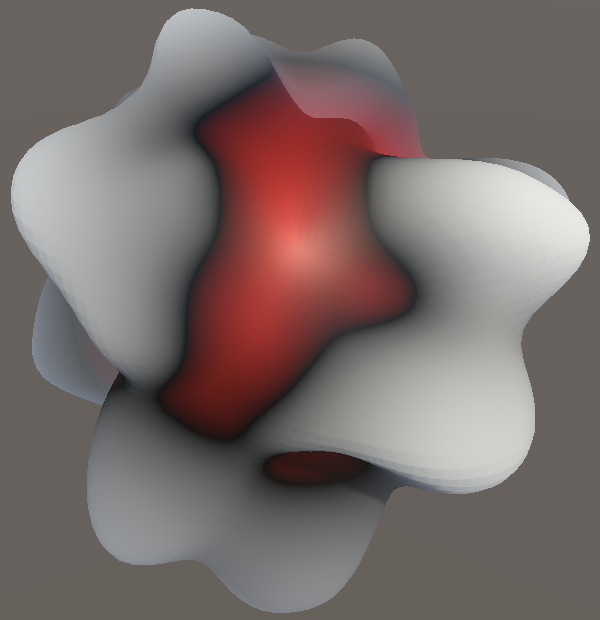
Tangents and Normals
Now that the sphere surface gets displaced the next step is to adjust the normals and tangents as well. Currently the sphere gets shaded as if it were still perfectly round. We can see both normals and tangents if we use a mesh type that includes both, so either the octasphere, geo octasphere, UV sphere, or non-shared cube sphere.
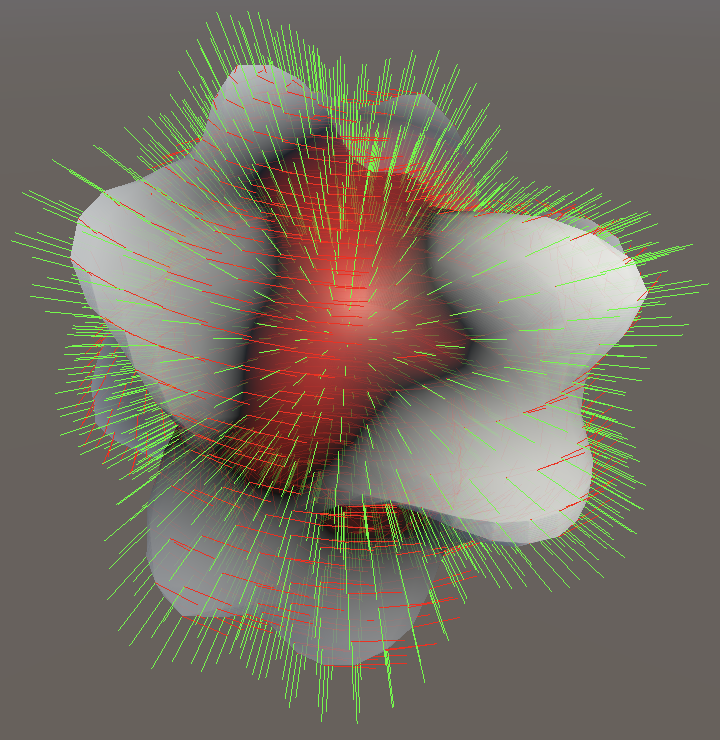
Tangents
Let's start with the tangent vectors. We assume that the mesh already has those, so we can grab, transpose, and store them in a float4x3 variable. Do this in between adjusting the noise value and updating the vertices in SetSphereVertices.
Vertex4 SetSphereVertices (Vertex4 v, Sample4 noise) {
noise.v += 1f;
float4x3 t = transpose(float3x4(
v.v0.tangent.xyz, v.v1.tangent.xyz, v.v2.tangent.xyz, v.v3.tangent.xyz
));
v.v0.position *= noise.v.x;
v.v1.position *= noise.v.y;
v.v2.position *= noise.v.z;
v.v3.position *= noise.v.w;
return v;
}
For planes we use `||[[1],[d_x],[0]]||` as the final tangent vector. We can rewrite this as the addition of the X axis and the scaled Y axis: `||[[1],[0],[0]]+d_x[[0],[1],[0]]||`. The X axis is the original tangent vector `t` of the plane, while the Y axis is the original normal vector `n` of the plane. So we can also write `||t+d_xn||`. Furthermore, we can rewrite `d_x` as the dot product of `t` and the entire 3D derivative `d`, so we end up with `||t+(t*d)n||`. This formula works for any tangent vector and normal, so we can use it to calculate the final tangent vector of our sphere.
We begin with the dot product.
float4x3 t = transpose(float3x4( v.v0.tangent.xyz, v.v1.tangent.xyz, v.v2.tangent.xyz, v.v3.tangent.xyz )); float4 td = t.c0 * noise.dx + t.c1 * noise.dy + t.c2 * noise.dz;
For the next step we need the normal vectors, for which we use the positions of the unit sphere. Put them in a float4x3 variable, before the tangents.
float4x3 p = transpose(float3x4( v.v0.position, v.v1.position, v.v2.position, v.v3.position )); float4x3 t = transpose(float3x4( v.v0.tangent.xyz, v.v1.tangent.xyz, v.v2.tangent.xyz, v.v3.tangent.xyz ));
Now we can add the scaled normals to the tangents.
float4 td = t.c0 * noise.dx + t.c1 * noise.dy + t.c2 * noise.dz; t.c0 += td * p.c0; t.c1 += td * p.c1; t.c2 += td * p.c2;
The final step is to normalize the adjusted tangents. As we'll need to do this more than once let's add a convenient NormalizeRows extension method for float4x3 to MathExtensions that does this for our vectorized 3D vectors.
public static float4x3 NormalizeRows (this float4x3 m) {
float4 normalizer = rsqrt(m.c0 * m.c0 + m.c1 * m.c1 + m.c2 * m.c2);
return float4x3(m.c0 * normalizer, m.c1 * normalizer, m.c2 * normalizer);
}
Use it to normalize the tangents, transpose them again, and set the vertex tangents.
t.c2 += td * p.c2; float3x4 tt = transpose(t.NormalizeRows()); v.v0.tangent = float4(tt.c0, -1f); v.v1.tangent = float4(tt.c1, -1f); v.v2.tangent = float4(tt.c2, -1f); v.v3.tangent = float4(tt.c3, -1f);
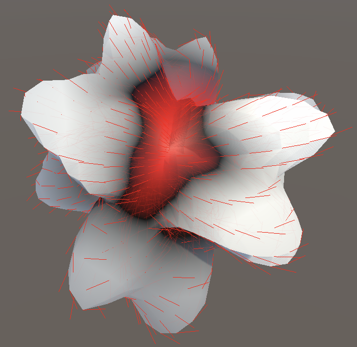
At this point we get tangent vectors that match the displaced surface of the sphere, but not entirely. The tangents on portions of the sphere that are displaced outward appear too steep, either pointing away from or into the surface. And the opposite is true for portions with inward displacement. This happens because by moving away from the original radius—at which we sampled the noise—we effectively scale the noise, decreasing its frequency when moving outward and increasing it when moving inward. We compensate for this by dividing the noise derivatives by the adjusted radius.
noise.v += 1f; noise.dx /= noise.v; noise.dy /= noise.v; noise.dz /= noise.v;
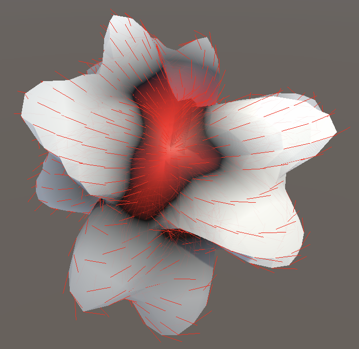
Bitangents
For the plane we found the normal by taking the normalized cross product of the tangents in the Z and X dimensions. The other tangent is commonly known as the bitangent. We can construct the bitangent for an arbitrary surface by taking the cross product of the unmodified tangent and normal vectors.
float4x3 t = transpose(float3x4( v.v0.tangent.xyz, v.v1.tangent.xyz, v.v2.tangent.xyz, v.v3.tangent.xyz )); float4x3 bt = float4x3( t.c1 * p.c2 - t.c2 * p.c1, t.c2 * p.c0 - t.c0 * p.c2, t.c0 * p.c1 - t.c1 * p.c0 ); float4 td = t.c0 * noise.dx + t.c1 * noise.dy + t.c2 * noise.dz;
Then we add the scaled normals to the bitangents just like we do for the tangents.
float4x3 bt = float4x3(…); float4 btd = bt.c0 * noise.dx + bt.c1 * noise.dy + bt.c2 * noise.dz; bt.c0 += btd * p.c0; bt.c1 += btd * p.c1; bt.c2 += btd * p.c2;
To visualize the bitangents let's temporarily use them as normal vectors. Normalize, transpose, and assign them to the vertex normals, after settings the vertex tangents.
float3x4 tt = transpose(t.NormalizeRows()); v.v0.tangent = float4(tt.c0, -1f); v.v1.tangent = float4(tt.c1, -1f); v.v2.tangent = float4(tt.c2, -1f); v.v3.tangent = float4(tt.c3, -1f); float3x4 nt = transpose(bt.NormalizeRows()); v.v0.normal = nt.c0; v.v1.normal = nt.c1; v.v2.normal = nt.c2; v.v3.normal = nt.c3;
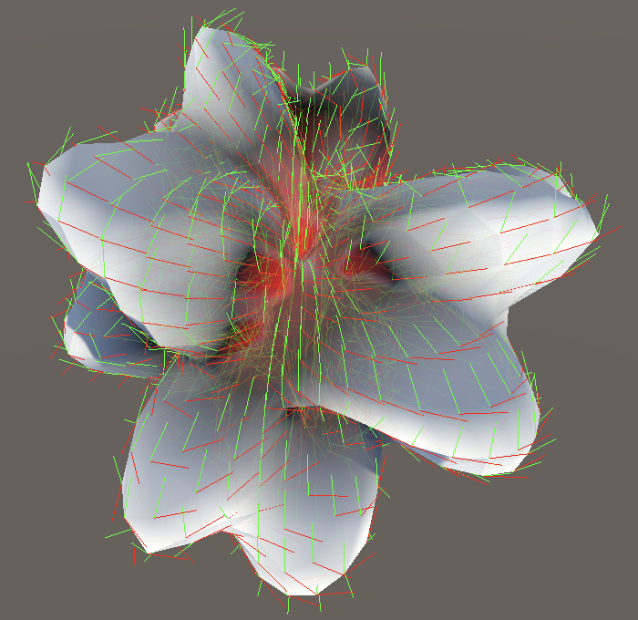
Normals
The final normal vectors are found by taking the normalized cross product of the bitangents and tangents. Note that we use the unnormalized adjusted bitangents and tangents, as we need to normalize the cross product anyway because the angle between the tangent and bitangent is most likely not 90°.
float3x4 nt = transpose(float4x3( bt.c1 * t.c2 - bt.c2 * t.c1, bt.c2 * t.c0 - bt.c0 * t.c2, bt.c0 * t.c1 - bt.c1 * t.c0 ).NormalizeRows());
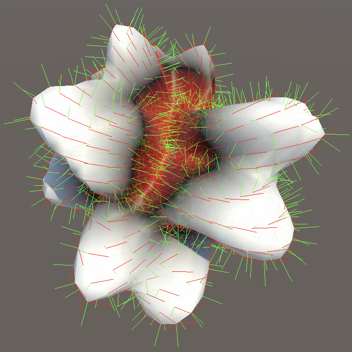
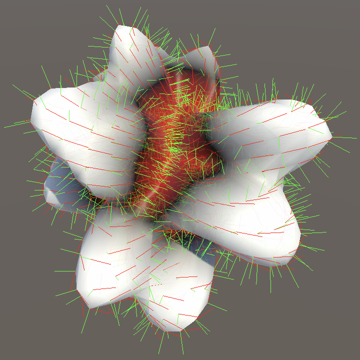
Derivative Projection
Although we can now generate normals for spheres that have tangents, we get no results for those that do not, which are the shared cube sphere and the icospheres. To also support those we would need to either construct tangent vectors for them or use an approach that doesn't rely on tangent vectors at all. It is possible to do the latter.
Normals without Tangents
For the normal vector of planes we use `||[[-d_x],[1],[-d_z]]||`, as that is what the cross product of the bitangent and tangent simplifies to. So we already use an approach for planes that does not rely on explicit tangent vectors. We can isolate the Y axis from this: `||[[0],[1],[0]]-[[d_x],[0],[d_z]]||`. The Y axis is the plane normal, so we can say that we subtract the XZ portion of the noise derivatives from the plane's normal: `||n-[[d_x],[0],[d_z]]||`. Furthermore, `[[d_x],[0],[d_z]]=d-[[0],[d_y],[0]]=d-n*d`. This leads to `||n-(d-n*d)||=||n-d+n*d||`.
In general this means that we project the noise derivatives on the normal vector, subtract that from the derivatives, then subtract that from the normal. In other words, we project the derivatives on the tangent plane. That gives us the adjustment that we have to make to the normal, without having to use specific tangent vectors. This formula works for any normal vector, so we can use it to calculate the adjusted normal vector for our sphere.
First remove the creation of the bitangent vectors, as we no longer need them.
//float4x3 bt = float4x3(// t.c1 * p.c2 - t.c2 * p.c1,// t.c2 * p.c0 - t.c0 * p.c2,// t.c0 * p.c1 - t.c1 * p.c0//);//float4 btd = bt.c0 * noise.dx + bt.c1 * noise.dy + bt.c2 * noise.dz;//bt.c0 += btd * p.c0;//bt.c1 += btd * p.c1;//bt.c2 += btd * p.c2;
Then adjust the normal calculation to match the new approach.
float4 pd = p.c0 * noise.dx + p.c1 * noise.dy + p.c2 * noise.dz; float3x4 nt = transpose(float4x3( p.c0 - noise.dx + pd * p.c0, p.c1 - noise.dy + pd * p.c1, p.c2 - noise.dz + pd * p.c2 ).NormalizeRows());
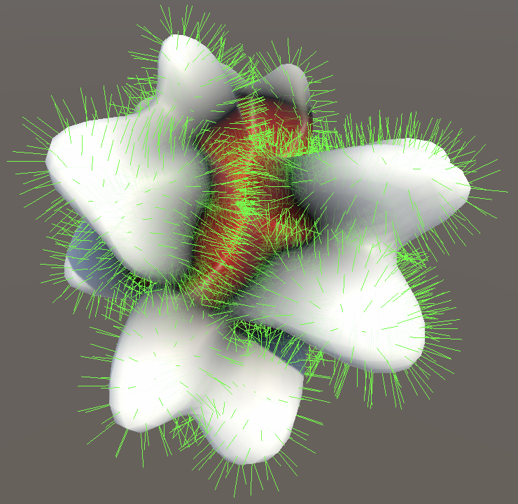
Skipping Tangents
We're still always adjusting the tangent vectors, even though some spheres don't have them. The XYZ components of missing tangents are zero and their adjustment will also be zero, so nothing changes. We can skip the unnecessary work by checking whether the mesh has valid tangents. We can suffice with checking only the first one. If it is missing then it should be zero, so only when it is nonzero do we have to adjust tangents. This can be verified by checking the sum of the absolute tangent components.
float3 tangentCheck = abs(v.v0.tangent.xyz);
if (tangentCheck.x + tangentCheck.y + tangentCheck.z > 0f) {
float4x3 t = transpose(float3x4(
v.v0.tangent.xyz, v.v1.tangent.xyz, v.v2.tangent.xyz, v.v3.tangent.xyz
));
float4 td = t.c0 * noise.dx + t.c1 * noise.dy + t.c2 * noise.dz;
t.c0 += td * p.c0;
t.c1 = td * p.c1;
t.c2 += td * p.c2;
float3x4 tt = transpose(t.NormalizeRows());
v.v0.tangent = float4(tt.c0, -1f);
v.v1.tangent = float4(tt.c1, -1f);
v.v2.tangent = float4(tt.c2, -1f);
v.v3.tangent = float4(tt.c3, -1f);
}
The next tutorial is Surface Flow.